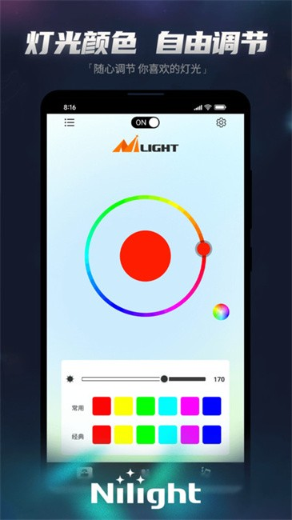
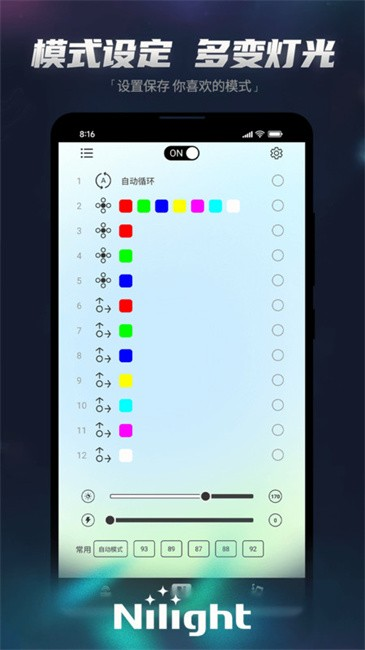

越野聚会上那台灯带没调好的车，被我用手机五分钟救了回来
周末车队出发前，朋友新装的 LED 灯带颜色碎得像马赛克，追逐方向也反了。掏出 Nilight App 连上蓝牙，调了几个参数，效果当场就不一样了。
上周末跟着本地越野队去城郊的砂石场地拉练，车队里新来的老王刚提了台硬派 SUV，后备箱装了一整排 LED 灯带——据说前一天熬夜贴的。但早上集合的时候我远远瞅了一眼，这灯带的效果实在有点垮：颜色过渡碎碎的，每个光点都是独立的小方块，像贴了一排马赛克贴纸；更别扭的是追逐方向，引擎启动时灯带从车尾往车头"跑"，跟车队前进的方向完全反着来，看着特别拧巴。
老王自己也头疼，说他对着遥控器调了一个晚上，颜色对了、亮度够了，但就是找不到地方改那个"方向"和"颗粒感"。遥控器上的按钮就那么几个，按来按去都是切模式，没有一个选项能让他满意。
我想起之前帮另一个朋友调过类似的灯带，用的就是Nilight这个App。当时那个朋友也是折腾了好几天遥控器搞不定，最后我拿手机蓝牙一连，两分钟就调好了。我掏出手机，先让老王去官方下载把 App 装上，然后让他把控制器的蓝牙打开——他的控制器是支持 App 连接的，只是他不知道而已。
连上的那一刻才发现，遥控器只是冰山一角
老王把控制器接在中控台下的储物格里，蓝牙名一串乱码，我在 App 的设备列表里扫了半分钟才找到。连上之后首页直接跳出来四个功能入口，底部一排图标：颜色、模式、音乐、麦克风。中间的控制区根据我点的功能在变，点"颜色"就出了一个色轮和一条亮度滑块，点"模式"就切到追逐、渐变、跳变那些动态效果的选择界面。
但我当时最关心的不是这些，而是那些"遥控器上根本找不到"的高级参数。Nilight App 在设备列表里给每个控制器配了一个齿轮图标，点进去就是设备设置——老王盯着这个界面看了半天，说他完全不知道遥控器背面长按三秒其实进的是另一个模式，而这个模式在 App 里直接摊开成了一张参数表。

调那几个参数，五分钟就搞定
进入设备设置后我一眼就看到了老王需要的东西。一组叫「高级 RGB 参数」的开关，里面正好有四项：颜色通道宽、运动方向、运行速度、亮度上限。
第一个要改的就是运动方向——老王的灯带追逐效果从车尾往车头跑，跟车辆前进方向相反。App 里这个参数就是一个二选一的开关，左边写着"A 端到 B 端"，右边写着"B 端到 A 端"。我选了另一边，切回模式界面一按追逐效果，方向立刻正了。老王凑过来看了一眼，眼睛都亮了。
第二个是颜色通道宽。老王说的"马赛克感"其实就是 LED 珠太密了，但每个 RGB 单元只占一个灯珠，所以颜色过渡被切碎了。这个参数的推荐值是 4 到 6 之间，数值越大过渡越粗。我把通道宽从默认的 2 拉到了 5，再跑一遍追逐效果，颜色过渡立刻柔和了——不再是一个个小方块跳来跳去，而是像一层薄纱在缓缓流动。老王拍了一下方向盘："就是这个感觉！"
第三个是亮度上限。夏天快到了，长时间亮着灯带容易发热。Nilight App 默认不封顶，但我给老王设到了 85% 的上限，这样亮起来不会刺眼，跑一整天也不会把控制器烤到发烫。
至于速度滑块，老王之前用遥控器其实能调，但他一直以为那个数字是百分比。我顺手跟他解释了一下——滑块上显示的数字其实是 PWM 值，实际亮度百分比大约是显示值除以 255 再乘 100%。他之前把滑块拉到 180 就以为是 180% 了，其实是 70% 左右。这个换算关系Nilight文档里也有记录，是社区用户实测出来的，不同固件版本可能略有差异，但基本够用。

出发前试了一下麦克风感应，效果意外地好
调完参数老王还意犹未尽，让我试试那个"麦克风感应"模式。我之前只知道音乐模式需要内置播放器，但麦克风模式是直接取手机麦克风的环境声——引擎声、说话声、甚至胎噪都能触发灯光变化。
我把灵敏度先设在中间值，大概 65% 左右，放在中控台上。老王发动引擎的瞬间，整条灯带跟着引擎的低频轰鸣一起脉动——不是那种夸张的闪爆，而是有节奏地呼吸，跟发动机的转速变化完全同步。车队里另外几个朋友凑过来围观，说这比他之前那个"马赛克灯带"强了不止一个档次。
我跟老王说麦克风的摆放位置其实很讲究。放在中控台上能同时听到车载音响和引擎声，适合平时行车；要是放在引擎舱附近，引擎声会直接触发，越野的时候特别带感；但如果放车门储物格，路面反馈和胎噪也会进来，灯光就会比较"忙"，吵得慌。他选了中控台的位置，正好。
车队上路，整条灯带在砂石路上像一条彩色的鱼
参数调完 App 关了，但灯带的状态被控制器记住了，下次开机直接恢复。老王把手机还给我，挠了挠头说他之前对 App 这类东西没信心，觉得遥控器就够了，没想到遥控器能做的只是基础功能，真正的精细调校全在 App 里。
车队沿着砂石路往峡谷里开，老王的车跟在我后面。透过后视镜我能看到那条灯带——不再是之前的马赛克，颜色过渡柔和，方向跟车队前进一致，麦克风感应着引擎声和路面的细碎震动，灯光在车尾有节奏地呼吸。阳光穿过尘土打在上面，像一条彩色的鱼在砂石路上游。
回来的路上老王跟我说，他晚上回家还想再试试那个灵敏度调节——白天砂石路太吵，灵敏度需要调低点，要是晚上在安静的小区里开，灵敏度调到 80% 以上，说不定风声都能触发。我让他放心调，调坏了大不了关掉 App 重启控制器，参数不会丢。
其实我自己用 Nilight 也有大半年了，最开始只是图方便，觉得蓝牙连手机比遥控器按来按去快。但这次在车队现场帮老王调灯带，我才意识到一个 App 能带来多大的体验差距——遥控器上的几个按钮是给"凑合能用"的人设计的，而 App 里那些摊开的参数，才是给真正想要"好看"的人准备的。那个运动方向的开关、那个颜色通道宽的滑块、那个亮度上限的封顶，每一个都不起眼，但加在一起，就把一条"能亮"的灯带变成了一条"好看"的灯带。
如果你也装了车载 LED 灯带，别只盯着遥控器。拿出手机搜一下 Nilight 试试就行，而且 App 本身支持简繁中、英、德、日、法、西、韩七种语言，装完就能用。里面把每个参数都写得很清楚，社区里还有不少用户实测的经验值，照着调不会错。